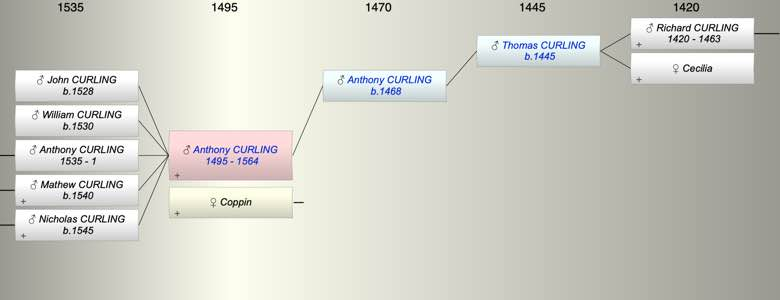

| [Index] |
| Anthony CURLING (1495 - 1564) |
|  |
| b. abt 1495 |
| +. Coppin |
| d. 1564 aged 69 |
| Parents: |
| Anthony CURLING (1468 - ) |
| Siblings (3): |
| Robert CURLING (1490 - 1542) |
| John CURLING (1495 - 1573) |
| Nicholas CURLING (1498 - 1567) |
| Children (5): |
| John CURLING (1528 - ) |
| William CURLING (1530 - ) |
| Anthony CURLING (1535 - 1) |
| Mathew CURLING (1540 - ) |
| Nicholas CURLING (1545 - ) |
| Grandchildren (16): |
| Anthony CURLING (1563 - 1565), Sybil CURLING (1567 - 1575), Katherine CURLING (1568 - ), William CURLING (1569 - 1574), Anthony CURLING (1571 - 1574), Elizabeth CURLING (1576 - ), Agnes CURLING (1578 - ), Jane CURLING (1580 - ), Mathew CURLING (1565 - ), Margaret CURLING (1570 - ), John CURLING (1572 - ), Margaret CURLING (1575 - ), John CURLING (1578 - ), Joan CURLING (1581 - 1582), William CURLING (1571 - ), John CURLING (1573 - 1590) |
| Events in Anthony CURLING (1495 - 1564)'s life | |||||
| Date | Age | Event | Place | Notes | Src |
| 0001 | Death of son Anthony CURLING | ||||
| abt 1495 | Anthony CURLING was born | ||||
| abt 1528 | 33 | Birth of son John CURLING | |||
| abt 1530 | 35 | Birth of son William CURLING | |||
| abt 1535 | 40 | Birth of son Anthony CURLING | |||
| abt 1540 | 45 | Birth of son Mathew CURLING | |||
| abt 1545 | 50 | Birth of son Nicholas CURLING | |||
| 1564 | 69 | Anthony CURLING died | Note 1 | ||
| Note 1: buried St Laurence 24 Dec 1564 ex MW |
| Personal Notes: |
|
May have marrried twice
will dated 1564 |
| Created on a Mac™ using iFamily for Mac™ on 8 Oct 2023 |